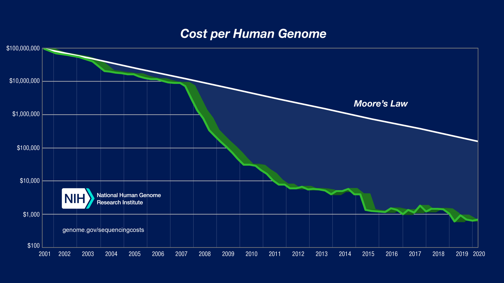

Data collection
Introduction to study design
GWAS often require very large sample sizes to identify reproducible genome-wide significant associations, and one would need to conduct power calculations to determine the appropriate sample size. Generally speaking, there are two types of study design depending on the nature of the trait of interest:
- 1) Case-control studies when the trait of interest is dichotomous (e.g. Type 2 diabetes)
- 2) Quantitative measurements on the whole study sample when the trait is quantitative (e.g. height)
In addition, one can choose between population-based and family-based designs. The choice generally depends on the data you have available - that is, if you have fewer samples, you can control for close relationships in your analyses rather than removing related individuals.
The goal of data collection is to ensure you have all the essential information required for downstream analyses. These areas of information could include:
- Biological samples: blood samples or similar (for later genotyping)
- Information about the traits of interest
- Clinical data: disease status e.g. have diabetes (case) vs do not have diabetes (control)
- Quantitative measurements e.g. biometric data, cholesterol, blood pressure, or blood sugar
- Questionnaires: additional potentially relevant info, like sex, age, or lifestyle
It is crucial to understand that any method used to obtain the required data will require informed consent and ethical approval. Achieving this can be quite challenging in practice, which is why publicly available biobanks are so widely utilized.
GWAS can be conducted using data from resources such as biobanks, cohorts with disease-focused or population-based recruitment, or direct-to-consumer studies. Several excellent public resources provide access to large cohorts with genotypic and phenotypic information, and the majority of GWAS are conducted using these preexisting resources. Some notable examples include the UK Biobank, FinnGen, Biobank Japan, and the All of Us Research Program.
Recruitment strategies must be carefully considered for all study designs as these can induce various forms of bias. For example, widely used research cohorts such as the UK Biobank recruit participants through a volunteer-based strategy. What this means in practice is that participants are, on average, healthier, wealthier, and more educated than the general population. Furthermore, cohorts that enroll participants from hospitals based on their disease status (such as BioBank Japan (Nagai et al. 2017)) will have different selection biases to cohorts recruited from the general population. Unlike research studies that focus on one disease or group of people, the new American initiative known as All of Us is building a diverse database designed to inform thousands of studies on a variety of health conditions. Different ethnicities, like the example just mentioned, can be included in the same study to make better predictions for people with different backgrounds, as long as the population substructure is considered to avoid false positive results.
Finally, study annotation is essential for rigorous scientific practice. This involves detailing the chosen study design, providing a thorough description of the study, and including specifics such as sample inclusion criteria (e.g., ancestry, clinical features) and the phenotype of interest in your association analysis.
Genotyping
Genotyping efficiently captures genetic variation by selecting informative SNPs, often in high linkage disequilibrium (LD), which reduces redundancy. Focusing on these SNPs minimizes computational load and improves cost-efficiency for a specific population.
Genotypic data can be obtained through microarrays to detect common variants, or through next-generation sequencing techniques for whole-genome sequencing (WGS) or whole-exome sequencing (WES). Microarray-based genotyping is the most commonly used method for obtaining genotypes for GWAS owing to the current cost of next-generation sequencing. However, as shown in the figure below, the decreasing cost per human genome is expected to make WGS the preferred method. Nevertheless, the choice of genotyping platform depends on many factors and tends to be guided by the purpose of the GWAS. For example, in a consortium-led GWAS, it is usually wise to have all individual cohorts genotyped on the same genotyping platform (to avoid problems with batch bias).
To enhance the power of GWAS, large reference panels are used to impute genotype data. This statistical technique predicts unobserved genotypes in the study sample based on observed genotypes and a reference panel. In other words, imputation fills in missing genotypes, increasing the number of variants that can be tested for association with traits. As mentioned before, it is crucial for the reference panel to be large and diverse to capture the genetic diversity of the entire population.

We have learned about the principles of study design for GWAS and the genotyping process. Let’s put it into practice.